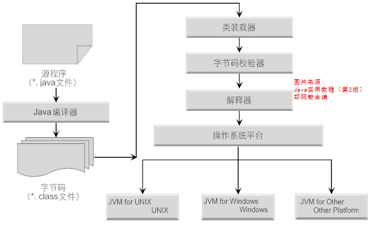
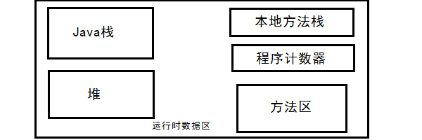
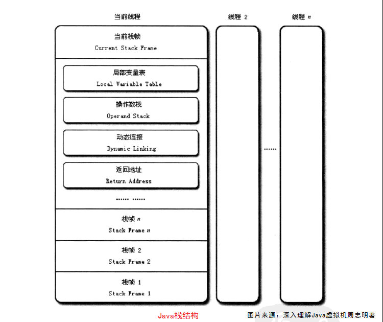

JVM的内存区域介绍
关键词： JVM , 运行时数据区 ，数据存储区
1. 运行时数据区概念
在讨论运行时数据区之前，让我们先看看Java程序是如何运行起来的。
如上图所示。首先，Java编译程序将后缀名为.Java的Java源程序编译为JVM可执行的代码，即后缀名为.class的Java字节码文件，解释执行过程分为代码装入（由类装载器完成）、代码的校验（由字节码校验器来完成）和代码的执行（由解释器来完成）三步进行。
在解释器执行整个程序的过程中，JVM会用一段空间来存储程序执行期间需要用到的数据和相关信息，这段空间就被称为运行时数据区，也就是JVM内存。
字节码：是一种中间语言，处于从人类可读的源码要机器码过渡的中间状态。
综上：Java编译器只面向JVM，生成JVM能理解的代码或字节码文件。JVM在执行字节码文件时，将字节码解释成具体平台上的机器指令执行。
2 运行时数据区所包含的内容。
运行时数据区一般包括：程序计数器、Java栈、本地方法栈、方法区、堆。如下图所示。
1 程序计数器
物理概念的程序计数器也称为PC寄存器，它保存的是程序下一条将要执行指令的所在单元的地址。当CPU要执行下一条指令时，需要 从程序计数器中得到下一条指令的所在存储单元的地址，然后根据得到的地址获取到指令，并执行获取到的指令同时PC寄存器自动加1或根据转移指针得到下一条指令的地址。虽然JVM中的程序计数器是虚拟的并不是真实存在的，但JVM中的PC计数器和物理概念的PC计数器在逻辑上是相同的！功能也是相同的！也就是说JVM中的PC寄存器存储的是程序下一条将要执行指令的地址。
由于Java虚拟机的多线程是通过线程轮流切换并分配处理器时间的方式来实现的，在任何一个确定的时刻，CPU只会执行一条线程中的指令。因此，为了线程切换后能恢复到正确的执行位置，每条线程都需要有一个独立的程序计数器，各条线程之间的计数器互不影响，独立存储。
2 Java栈
Java栈和程序计数器一样，每个线程都拥有独立的栈，栈中存放的是一个个的栈帧，每个栈帧对应一个被调用的方法。当一个线程执行一个方法时，就会随之创建一个对应的栈帧，并将建立的栈帧压入栈中，当方法执行完后，便会将栈帧出栈。每一个栈帧中包括局部变量表、操作数栈、动态链接、和方法返回地址和一些额外的信息。栈帧的结构如下图所示。

局部变量表
局部变量表是一组变量值存储空间，用于存放方法参数和方法内部定义的局部变量。在Java文件被编译为class文件时，就已经确定了该方法所需要分配的最大局部变量表的容量。对于基本数据类型的变量，则直接存储它的值，对于引用类型的变量，则存的是指向对象的引用，对象的实际数据存储在堆中。
操作数栈
顾名思义，操作数栈就是存放操作数的栈嘛！那什么是操作数呢？1+2=3知道不？1、2、3就是操作数啦！在一个方法刚刚开始执行时，这个方法的操作数栈是空的，在方法的执行过程中，会有各种字节码指令向操作数栈中写入和提取内容。例如在执行1+2时，当执行加法指令时，要求1、2已经存入操作数栈中的栈顶位置，当执行这个指令时，会将这两个值出栈并相加，然后将相加的结果入栈。
动态链接
每个栈帧都包含一个指向运行时常量池中该栈所属方法的引用，持有这个引用是为了支持方法调用过程中的动态链接。 常量池（存在于方法区）中存放了大量的在编译时编译器生成的各种字面量和符号引用。方法中所有使用到或引用的常量都可以在常量池中找到。之所以是动态链接，是因为Java不要求常量一定只能在编译器产生，也可以在运行时将新的常量放入常量池。如：String类的intern方法。
方法返回地址
当一个方法被执行后，有两种方式退出这个方法。第一种是遇到return返回，另一种是遇到了异常。当方法正常退出之后，返回地址就是方法被调用的位置，而方法异常退出时返回地址是要通过异常处理器表来确定的。
3 本地方法栈
本地方法的概念在介绍本地方法栈之前，我们也了解了解本地方法的概念，本地方法（也可以称为native method）是指由非Java语言（如：C、C++等）实现的方法。当Java应用需要与底层的操作系统或某些硬件进行交互时，就需要本地方法来当中间人了！
在定义一个本地方法时，并不提供实现体（与接口很像），因为它的实现体是由非Java语言在外面实现的。比如：native public int Native1（）；本地方法也是可以被继承的，重写这个方法（我在想,该用什么语言写？）。
native标识符可以与所有其他的Java标识符一起连用，除了abstract！这是因为abstract是抽象的意思！当他修饰一个方法时，是表示被修饰的方法是没有实现体的。而本地方法是有实现体的，只不过实现体是非Java代码。要注意的是，一旦使用了本地的方法就是失去了程序的可移植性，只能在含有Java应用调用的本地方法的机器上才能运行。
本地方法栈的概念
本地方法栈与上面讲的Java栈功能是相似的，Java栈是为Java服务的，本地方法栈是为本地方法服务的！
4 方法区
方法区是各个线程共享的内存区域，他用于存储已经被虚拟机加载的类信息、常量、静态变量。类的信息主要包含类的版本、字段、方法的具体实现、接口等描述信息。常量、静态变量以及在编译器生成的各种字面量和符号引用是存放常量池（常量池位于方法区中）中的。这个常量池是动态的，不仅可以在类加载时向常量池中添加常量等信息，也可以在运行期间将新的常量放入池中比如”String类的intern（）方法“。5 堆
堆与方法区一样，是各个线程共享的一块内存区域。在虚拟机启动时创建。堆区域存放的是对象实例，所有的对象实例以及数组都要在堆上分配。OK!binge要说的也就这些了！希望大家从中有所收获，再见，下篇文章见！！^_^